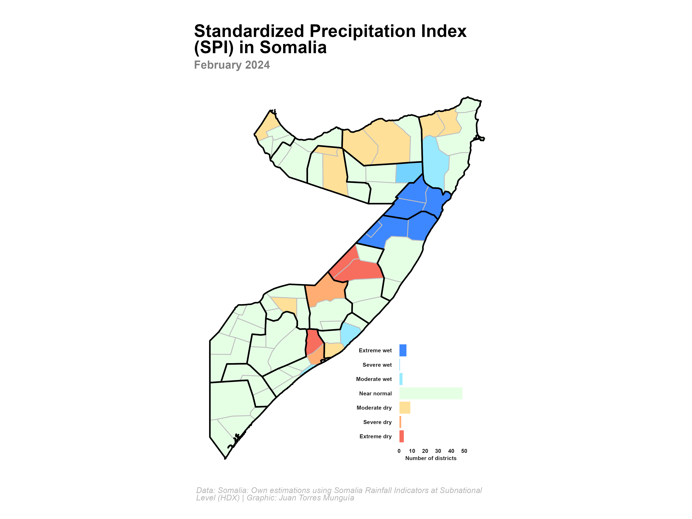

How to compute and visualize the Standardized Precipitation Index (SPI) for drought analysis
Part 2: Visualizing the SPI for the districts of Somalia using {ggplot2} in R
Overview
Previously, in Part 1 of this tutorial, we calculated the Standardized Precipitation Index (SPI) for different time scales using the {SCI} package in R. Now, we will map the SPI values for the districts of Somalia using {sf} and {ggplot2} packages in R.
About the data
The information of the Somalian sub national administrative boundaries is obtained from the Humanitarian Data Exchange (HDX) initiative of the United Nations Office for the Coordination of Humanitarian Affairs (OCHA). The information comes as a shapefile .shp and is available here in a zip file named som_adm_ocha_20250108_AB_SHP.zip. The shapefile contains the administrative boundaries of Somalia at the subnational level. In particular, we will use file som_admbnda_ADM2_ocha_20250108.shp, that contains the shapefile of Somalia at the district level. I downloaded this file and located it in /shp folder.
Set-up
Before we begin, we need to install and load the necessary R packages.
Loading data HDX
Data can be found here in file som-rainfall-adm2-full.csv. For Somalia, data is available from January 1981.
# Load the shapefile for Somalia
shp_somalia <- read_sf("shp/som_admbnda_adm2_ocha_20250108.shp")
# Rename columns for better readability
shp_somalia <- shp_somalia |>
rename(
district = ADM2_EN, # Rename ADM2_EN to district (English names of districts)
district_code = ADM2_PCODE # Rename ADM2_PCODE to district_code (district codes)
)Data wrangling
I will add the SPI values previously calculated to the shapefile data frame. I saved the SPI values in a RData file named rainfall_data.RData.
load("rainfall_data.RData")
# First, we need to filter the SPI values for the last available month, i.e. December 2024
# to have only one observation per district
rainfall_data_dec2024 <- rainfall_data |>
filter(month == 2 & year == 2024)
# Merge the shapefile with the SPI values
shp_somalia <- shp_somalia |>
left_join(rainfall_data_dec2024, by = c("district_code"))Set theme settings and define fonts, colors, and text to be used in the map
# Custom theme for the map and legend
theme_spi_map <- function() {
theme_minimal(
base_family = "Roboto Condensed" # Base theme with custom font
) +
# Custom theme settings
theme(
# Title settings
plot.title.position = "plot", # Position of the title
plot.title = element_textbox(
color = "black",
face = "bold",
size = 22,
margin = margin(5, 0, 5, 0), # Top, right, bottom, left
width = unit(1, "npc") # Width of the title, npc == 1 corresponds to the full width of the plot
),
plot.subtitle = element_textbox(
color = "grey50",
face = "bold",
size = 14,
margin = margin(20, 0, 10, 0),
width = unit(1, "npc")
),
# Legend settings
legend.position = "top",
legend.title = element_blank(),
legend.key.height = unit(0.1, "cm"), # Height of the legend key
legend.key.width = unit(0.1, "cm"), # Width of the legend key
legend.spacing.x = unit(0.1, "cm"),
legend.key.spacing = unit(0.1, "cm"), # Spacing between legend keys
legend.text = element_text(
margin = margin(5, 0, 5, 0),
face = "bold",
color = "grey10",
size = 10
),
legend.direction = "horizontal",
legend.byrow = FALSE,
# Caption settings
plot.caption = element_textbox(
color = "grey70",
face = "italic",
size = 10,
margin = margin(10, 0, 5, 0),
width = unit(1, "npc")
),
plot.background = element_rect(
color = "white",
fill = "white"
),
plot.margin = margin(20, 40, 20, 40)
)
}
# Title, subtitle, and caption for the waffle chart
title_chart <- "Standardized Precipitation Index (SPI) in Somalia"
subtitle_chart <- "February 2024"
caption_chart <- "Data: Somalia: Own estimations using Somalia Rainfall Indicators at Subnational Level (HDX) | Graphic: Juan Torres Munguía"Now, lets create a histogram of the SPI values for the districts of Somalia to use as a legend for the map.
spi_colors <- data.frame(
ymin = c(-5, -2, -1.5, -1, 0, 1, 1.5, 2),
ymax = c(-2, -1.5, -1, 0, 1, 1.5, 2, 5),
label = factor(
c(
"Extreme dry", "Severe dry", "Moderate dry", "Near normal",
"Near normal", "Moderate wet", "Severe wet", "Extreme wet"
),
levels = c(
"Extreme dry", "Severe dry", "Moderate dry", "Near normal",
"Moderate wet", "Severe wet", "Extreme wet"
)
),
fill = c(
"#F76D5E", "#FFAD72", "#FFE099", "#E5FFE5",
"#E5FFE5", "#99EAFF", "#75D3FF", "#3D87FF"
)
)
shp_somalia <- shp_somalia %>%
mutate(spi_category = cut(spi1,
breaks = c(-Inf, spi_colors$ymax),
labels = spi_colors$label,
right = TRUE
)) |> # right = TRUE means that the intervals are closed on the right
filter(!is.na(spi1))
histogram_spi <- shp_somalia |>
filter(!is.na(spi_category)) |>
ggplot(aes(x = spi_category, fill = spi_category)) +
geom_bar(color = "white") +
scale_fill_manual(values = setNames(spi_colors$fill, spi_colors$label)) +
labs(
title = "",
x = "",
y = "Number of districts"
) +
theme_spi_map() +
theme(
legend.position = "none",
axis.title = element_text(
color = "grey10",
face = "bold",
size = 7
),
axis.text = element_text(
color = "grey10",
face = "bold",
size = 7
),
axis.line = element_blank(),
panel.grid = element_blank()
) +
coord_flip()# Read the shapefile of Somalia with the interior region borders
shp_somalia_region <- read_sf("shp/som_admbnda_adm1_ocha_20250108.shp")
shp_somalia_region <- st_transform(shp_somalia_region, 3857) # Web Mercator projection
shp_somalia <- st_transform(shp_somalia, 3857)
map_spi <- ggplot() +
geom_sf(
data = shp_somalia, aes(fill = spi_category), color = "grey", linewidth = 0.5
) +
scale_fill_manual(values = setNames(spi_colors$fill, spi_colors$label)) +
geom_sf(data = shp_somalia_region, fill = NA, color = "black", linewidth = 0.9) +
labs(
title = title_chart,
subtitle = subtitle_chart,
caption = caption_chart,
x = "",
y = "",
fill = ""
) +
theme_spi_map() +
theme(
legend.position = "none",
# Axis settings
axis.title = element_blank(),
axis.line = element_blank(),
axis.text = element_blank(),
axis.ticks = element_blank(),
panel.grid = element_blank()
)map_spi +
inset_element(histogram_spi, left = 0.4, bottom = 0, right = 1, top = 0.4, on_top = FALSE)showtext_opts(dpi = 320) # Set the resolution of the image 320 dpi is for high-quality images ("retina")
ggsave(
"spi-somalia-map.png",
dpi = 320,
width = 12,
height = 9,
units = "in"
)
showtext_auto(FALSE)
Citation
@online{torres munguía2025,
author = {Torres Munguía, Juan Armando},
title = {How to Compute and Visualize the {Standardized}
{Precipitation} {Index} {(SPI)} for Drought Analysis},
date = {2025-02-14},
langid = {en}
}